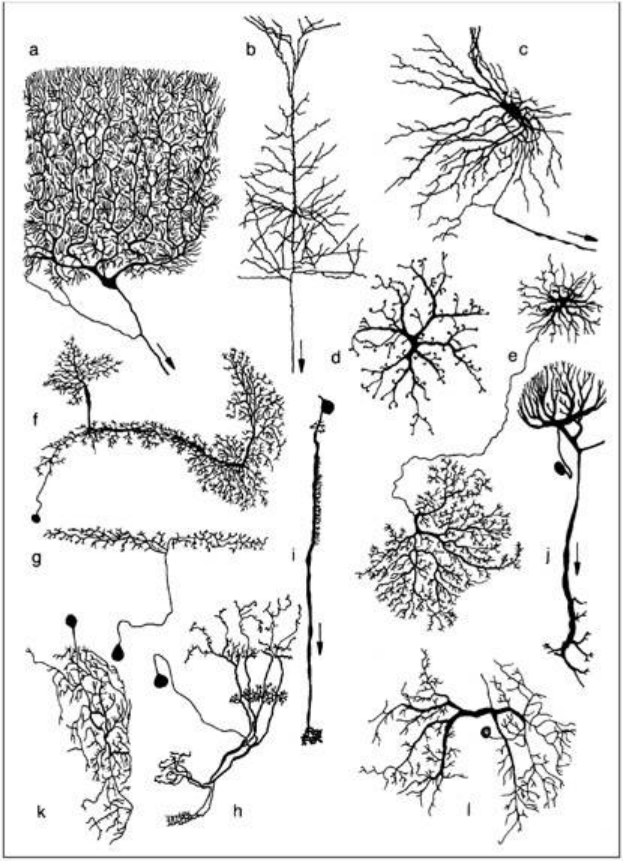

Chương 2: Từ Dịch Thể Đến Tế Bào: Các Thành Phần Của Tâm Trí
Sự xuất hiện rộng rãi của kỹ thuật “phẫu thuật” khoan sọ — cắt bỏ một phần hộp sọ để phơi bày não bộ — trong các nền văn minh sơ kỳ cho thấy các nền văn hóa cổ đại đã nhận ra não bộ là một cơ quan then chốt. Điều này không có nghĩa là mối liên hệ giữa não bộ và tâm trí đã có từ thời tiền sử. Thực tế, lịch sử lâu dài của thần kinh học trước giai đoạn khoa học cho thấy điều đó hoàn toàn không hiển nhiên: các chức năng tinh thần nhất thiết phải được quy cho não bộ. Người Ai Cập chẳng hạn rõ ràng không đánh giá cao não bộ, vì trong quá trình ướp xác họ múc não ra và vứt bỏ (một tập tục chấm dứt vào khoảng cuối thế kỷ thứ 2 sau Công nguyên). Đối với người Ai Cập cổ đại, chính trái tim mới được xem là nơi có trí tuệ và tư tưởng — có lẽ vì lý do này mà trái tim được bảo quản cẩn thận khi ướp xác người đã khuất.
Dù Hippocrates (460–370 TCN) thường được ghi nhận là người đầu tiên ở phương Tây lập luận rằng não bộ là cơ quan quan trọng nhất cho cảm giác, tư tưởng, cảm xúc và nhận thức, ông không phải là người Hy Lạp đầu tiên xem xét câu hỏi về sự thể hiện thể chất của tâm trí. Trước cuộc cách mạng Hippocrates, Pythagoras (582–500 TCN) tin rằng vật chất và tâm trí có liên hệ với nhau bằng cách nào đó và tâm trí được điều hòa theo các định luật toán học. Có lẽ Pythagoras ít quan tâm đến việc tâm trí và vật chất được kết nối trong não bộ hay, như người Ai Cập và người Hy Lạp trước năm 500 TCN tin, trong trái tim.
Alcmaeon xứ Croton (sinh năm 535 TCN), bản thân là một tín đồ của Pythagoras, là một trong những người đầu tiên nhận ra rằng não bộ có lẽ là trung tâm của trí tuệ. Ông cũng là người được biết đến đầu tiên thực hiện các cuộc mổ xác người, và qua đó ông nhận thấy mắt được nối với não bộ bằng thứ mà ngày nay chúng ta biết là dây thần kinh thị giác. Chính dựa trên những quan sát trực tiếp của mình mà Alcmaeon đã suy đoán một cách sắc sảo, trước Hippocrates một thế kỷ, rằng não bộ là trung tâm của hoạt động tinh thần. Tuy nhiên Hippocrates đi xa hơn thế và xây dựng một thuyết về bốn loại dịch thể, cùng nhau quyết định khí chất. Theo đó, theo Hippocrates, bốn yếu tố quyết định khí chất là mật đen (u sầu), mật vàng (dễ nóng giận), đờm (điềm tĩnh và chậm chạp), và máu (đam mê và vui vẻ). Với chúng ta, thuyết dịch thể có vẻ không hợp lý, khó hiểu và tùy tiện. Dường như nó không được truyền cảm hứng từ bằng chứng quan sát, mà từ nhu cầu phù hợp với các giả định không kém phần khó tin của luật tự nhiên Hy Lạp đương thời, cụ thể là có bốn nguyên tố: đất, không khí, nước và lửa.
Ảnh hưởng của Hippocrates thật sâu sắc và kéo dài đáng kể. Khoảng 400 năm sau khi Hippocrates mất, Claudius Galenus xứ Pergamum (sau Công nguyên 131–201), được biết đến nhiều hơn với tên Galen, trở thành thầy thuốc có ảnh hưởng nhất thời của ông, một phần nhờ việc xây dựng lý thuyết của riêng mình trên những phỏng đoán về dịch thể của Hippocrates. Galen am hiểu bất thường về giải phẫu bên trong của cơ thể người, sự hiểu biết sâu sắc đó ông có được khi làm thầy thuốc tại một trường dạy đấu sĩ. Tuy nhiên, dù chúng ta có thể biết ơn ông vì đã duy trì ý tưởng rằng não bộ là nơi ngự trị của tâm trí, ông vẫn tiếp nối truyền thống Hippocrates là xem nhẹ tầm quan trọng của các mô rắn của não bộ đối với các chức năng tinh thần. Thay vào đó, Galen liên hệ sự hiện diện của ba khoang chứa dịch trong não, hay các tâm thất, với sự phân chia ba phần của các năng lực tinh thần — linh hồn lý trí — thành trí tưởng tượng, lý tính và trí nhớ. Theo Galen, chức năng chính của não bộ là phân phối dịch sống từ các tâm thất qua các dây thần kinh đến cơ bắp và các cơ quan, từ đó bằng cách nào đó kiểm soát hoạt động của cơ thể. Không cần ngạc nhiên là người ta không giải thích chính xác các tâm thất của não được cho là điều hòa ba chức năng nhận thức ấy như thế nào.
Đóng góp tích cực của Galen cho y học là không thể phủ nhận, nhưng nhiều ý tưởng của ông có sai sót nghiêm trọng. Điều đó đã không quan trọng đến thế nếu không phải vì sau khi ông mất, uy tín của Galen chiếm ưu thế và vì thế cản trở y học và thực hành y khoa trong khoảng 400 năm. Một ví dụ đặc biệt thú vị về ảnh hưởng của ông có thể thấy trong các bản vẽ giải phẫu sơ kỳ của Leonardo da Vinci (1452–1519). Trong một bản vẽ đầu người, não bộ được miêu tả thô sơ gồm ba khoang đơn giản được gắn nhãn O, M và N. Leonardo giải thích sự phân chia giải phẫu đó theo thuật ngữ chức năng theo cách mà Galen ở thế kỷ thứ 1 đã nhận ra ngay lập tức.
Sau này Leonardo đã có một số quan sát quan trọng nhất về não bộ và các tâm thất của nó. Ông được ghi nhận là người đầu tiên dùng phương pháp tiêm sáp đông đặc để tạo khuôn, nhằm nghiên cứu các khoang bên trong của não bộ và các cơ quan khác, kể cả tim. Bằng phương pháp này, Leonardo xác định chính xác hình dạng và phạm vi của các khoang não, nhưng rõ ràng ông vẫn tiếp tục đặt cách giải thích theo Galen lên các cấu trúc chứa dịch. Chẳng hạn, các tâm thất bên mang chữ imprensiva (mang tính cảm giác) do chính tay Leonardo viết, tâm thất thứ ba được gắn nhãn sensus communis, và tâm thất thứ tư là memoria. Việc dùng tiêm sáp của Leonardo là một bước tiến khoa học có tiềm năng và tầm quan trọng to lớn. Đáng tiếc là sự chiếm ưu thế của các phỏng đoán của Galen về chức năng các tâm thất đã chuyển hướng chú ý của ông khỏi mô rắn của não bộ — nơi ngự trị thực sự của tâm trí.

Hình 1 — Bản vẽ giải phẫu của Leonardo da Vinci: Đầu người và những gì bên trong theo Leonardo da Vinci. Có lẽ được vẽ khoảng năm 1490, bản vẽ này là một nỗ lực chuyển dịch mô tả về não bộ do các triết gia trung cổ đưa ra. Bản vẽ này cho thấy (sai) rằng mắt được nối bằng dây thần kinh thị giác tới ba khoang đơn giản gắn nhãn O, M và N. Leonardo bỏ qua cấu trúc phức tạp của các mô rắn trong não bộ. Các bản vẽ nhỏ hơn gồm một lát cắt của củ hành (chính xác), mắt và hốc mắt, cùng một lát cắt ngang của đầu.
Những ý tưởng về chức năng và cơ chế của não bộ tiếp tục chịu ảnh hưởng mạnh mẽ từ các thuyết liên quan đến sự chảy và chưng cất của các dịch sống, tinh thần và dịch thể cho đến tận thế kỷ 17. Quả thật, ảnh hưởng của Hippocrates và Galen có thể thấy trong mô hình thủy lực về não bộ do triết gia Pháp nổi tiếng nhất thế kỷ 17, René Descartes (1596–1650), đưa ra. Tuy nhiên Descartes đã diễn giải lại mô tả về hoạt động của não bộ dựa trên dịch thể và thể hiện nó bằng thuật ngữ đương thời, bằng cách so sánh não với hoạt động của những cỗ máy phức tạp thời ông, chẳng hạn đồng hồ và các bức tượng chuyển động, các chuyển động của chúng được điều khiển bằng hệ thống thủy lực. Điểm quan trọng là ông đã rời bỏ truyền thống cổ điển là đặt các quá trình nhận thức hoàn toàn trong các tâm thất chứa dịch của não, nhưng dù vậy ông vẫn nhắc đến dòng chảy của tinh thần qua các dây thần kinh và không cố gắng gán chức năng cho các cấu trúc cụ thể của não, ngoại trừ đáng chú ý là tuyến tùng. Tuyến tùng, vì là một cấu trúc duy nhất và ở vị trí trung tâm, được cho là mối liên hệ với linh hồn đơn nhất, nhưng cũng được trao quyền điều hành, điều khiển dòng chảy của tinh thần động vật qua não bộ.
Ở một khía cạnh quan trọng, Descartes đã mở ra hướng đi mới. Bằng cách so sánh hoạt động của não bộ với hoạt động của những cỗ máy thủy lực phức tạp, ông xem các sản phẩm công nghệ tiên tiến nhất thời đại mình làm khuôn mẫu để hiểu về não bộ. Đây là một truyền thống vẫn tiếp diễn đến ngày nay; chẳng hạn khi chúng ta viện dẫn máy tính và các thao tác tính toán làm mô hình cho cách não bộ thu nhận, xử lý và lưu trữ thông tin. Vì vậy, dù Descartes sai hoàn toàn về chi tiết, ông đã áp dụng một phong cách lập luận hiện đại.
Có lẽ không có gì ngạc nhiên khi các thuyết liên quan đến mô rắn của não bộ khó được hình thành — sau cùng, chất rắn của não không có bộ phận chuyển động nào nhìn thấy được. Tuy nhiên đến thế kỷ 17, sự kìm kẹt của thuyết dịch thể đang suy yếu, một phần nhờ công trình của một thế hệ giải phẫu học mới đang mô tả cấu trúc bên trong của não bộ ngày càng chính xác. Đáng chú ý, người Anh Thomas Willis (1621–75), người đã đặt ra thuật ngữ “thần kinh học”, lập luận rằng mô não rắn có những chức năng quan trọng. Ông vẫn cho rằng dòng chảy của dịch là chìa khóa để hiểu chức năng não bộ, nhưng trọng tâm của ông là các mô não rắn và ông đã chứng minh rằng chức năng thần kinh phụ thuộc vào dòng máu chảy đến đó. Kỹ thuật chụp ảnh não bộ chức năng hiện đại (fMRI — chụp cộng hưởng từ chức năng) cho thấy những gia tăng nhỏ tại chỗ của lưu lượng máu liên quan đến sự kích hoạt của các tế bào thần kinh. Việc thực sự có một sự “đỏ mặt” tại chỗ của não khi các neurons (tế bào thần kinh) trong vùng đó hoạt động là một quan sát mà Willis hẳn đã mong đợi và thích thú.
Một trong những vấn đề rõ rệt nhất của các mô hình dịch sống và thủy lực về chức năng hệ thần kinh — chắc chắn Willis cũng biết — là các dây thần kinh không phải ống rỗng. Và dù có là đi nữa, tốc độ chuyển động của dịch qua đó khó có thể đủ nhanh để phù hợp với sự nhanh chóng mà cảm giác và mệnh lệnh vận động dường như được truyền đi qua dây thần kinh. Những mâu thuẫn này và các mâu thuẫn khác với mô hình dịch thể của hệ thần kinh hẳn đã làm bận tâm những thầy thuốc tầm cỡ như Willis và khiến họ phải suy nghĩ. Nhưng Willis vẫn là một người theo thuyết dịch thể, và khởi đầu cho sự chấm dứt của việc phát triển vô ích những lý thuyết như vậy chỉ đến với các phát hiện gán cho Luigi Galvani (1737–98). Cuối thế kỷ 18, ông phát hiện tầm quan trọng của điện đối với hoạt động của hệ thần kinh. Vì các cơ chế điện sẽ cung cấp tốc độ cần thiết, sự chú ý không tránh khỏi chuyển từ mô hình dịch sang mô hình điện. Một cách trớ trêu, hơi thở cuối cùng của di sản Hippocrates và Galen lại nằm ở cách chính Galvani giải thích các thí nghiệm của mình về “điện động vật”. Sau khi chứng minh rằng ông có thể điều khiển sự co của cơ ếch bằng cách áp dòng điện vào dây thần kinh vận động của cơ, Galvani tuyên bố đã phát hiện ra rằng dây thần kinh và cơ động vật chứa một “chất lỏng” điện. Tuy nhiên, một bước nhảy quyết định trong hiểu biết đã đạt được khi Galvani và người cùng thời Alessandro Volta (1745–1827) cùng nhau liên kết điện với chức năng của các hệ thần kinh.
Tuy nhiên điều mà cả Galvani lẫn Volta đều không thể biết là các kích thích điện áp dụng từ bên ngoài đang kích hoạt các quá trình sinh học, khiến các xung điện tốc độ cao truyền dọc dây thần kinh đến cơ bắp, gây ra sự co lại của chúng. Phải đến giữa thế kỷ 19, khả năng của dây thần kinh và cơ bắp trong việc tạo ra các xung điện lan truyền nhanh mới được nhà sinh lý học người Đức Du Bois-Reymond (1818–96) xác nhận. Đây là một động lực lớn cho việc nghiên cứu cơ chế vật lý của não bộ và đã chuẩn bị nền tảng cho kỷ nguyên khoa học hiện đại, được khởi đầu một cách ngoạn mục vào đầu thế kỷ 20 bằng việc nhận ra bản chất tế bào của những đơn vị chức năng nhỏ bé của não — các nơ-ron.
Bản chất tế bào thực sự của não bộ và của các chức năng tinh thần của nó lần đầu được nhận ra bởi cha đẻ của thần kinh học hiện đại, nhà giải phẫu thần kinh người Tây Ban Nha Santiago Ramon y Cajal (1852–1934). Dù ngày nay mệnh đề của ông rằng não bộ là một cỗ máy tế bào có vẻ bình thường, thực tế nó đã mang tính cách mạng. Vào cuối thế kỷ 19, và thậm chí những năm đầu thế kỷ 20, hầu hết các nhà giải phẫu thần kinh tin rằng não bộ hoàn toàn không được tạo thành từ tế bào — bất chấp sự thừa nhận phổ biến rằng tất cả các cơ quan và mô khác trong cơ thể chúng ta đều như vậy. Điều gì ở não bộ khiến việc nhìn thấy thành phần tế bào của nó dưới kính hiển vi trở nên khó khăn đến thế? Một phần câu trả lời là các tế bào não khác hẳn mọi tế bào khác. Chính thuật ngữ “tế bào” đã hàm ý sự đồng nhất: những cấu trúc đơn giản được xác định bằng ranh giới rõ ràng.

Hình 2 — Một tuyển chọn các nơ-ron để minh họa sự đa dạng: Các nơ-ron đa dạng về hình dạng hơn bất kỳ loại tế bào nào khác. Hình thái phân nhánh phức tạp của chúng phản ánh nhu cầu trao đổi thông tin với các nơ-ron khác ở gần và ở xa hơn. Độ phức tạp của hình dạng không phải là thước đo hiệu năng tổng thể của não bộ — một nơ-ron trong não động vật có vú (góc trên bên trái) chẳng phức tạp hơn mấy một nơ-ron từ não côn trùng (góc dưới bên phải)
Ngược lại, các nơ-ron lại cực kỳ đa dạng về hình thái. Chúng có những sợi nhánh cực mảnh và phân nhánh dày đặc, tỏa ra từ thân tế bào và xen lẫn vào các nhánh của nơ-ron khác. Sự phức tạp và đa dạng về hình dáng bên ngoài của chúng dễ dàng vượt xa mọi loại tế bào khác được tìm thấy ở bất kỳ bộ phận nào của cơ thể. Tất cả những điều đó tạo nên một bức tranh khá rối ren mà các nhà giải phẫu thấy khó dung hòa với một mô hình tế bào đơn giản về cấu trúc não. Khi nhìn qua kính hiển vi, não bộ dường như là một đống lộn xộn không thể gỡ (một mạng lưới), không có các ranh giới rõ ràng xác định tế bào như thấy rõ ở các mô khác. Vì thế có lẽ không ngạc nhiên khi thuyết tế bào — ý tưởng rằng mô được tạo thành từ tế bào — được cho là không áp dụng được cho não, và một mô hình thay thế cấp tiến đã được đề xuất. Mô hình này được gọi là “thuyết mạng lưới” trong giải phẫu não — một cách giải thích kiên cường đến ngạc nhiên đã tồn tại mãi vào thế kỷ 20.
Thuyết mạng lưới là sai, nhưng đó không phải là vấn đề duy nhất của nó. Các lý thuyết khoa học được phép sai miễn là chúng hữu ích, nhưng thuyết mạng lưới, vốn cho rằng não không chứa thành phần rời rạc nào, thực sự lại cản trở tiến bộ khoa học. Tiến bộ bị cản trở bởi khái niệm một cỗ máy không có thành phần chức năng rời rạc, vì nếu không có chúng thì không thể xây dựng một cơ chế hợp lý để giải thích não bộ hoạt động thế nào. Các nhà khoa học tin chắc cỗ máy não bộ phải có các thành phần, và với độ phức tạp của những gì não làm, thì phải có rất nhiều. Nhưng chúng là gì, trông như thế nào và làm gì? Rõ ràng là để hiểu não bộ, khoa học phải xác định được các thành phần chức năng của cấu trúc vi mô của não.
Về cuối thế kỷ 19, nhà giải phẫu người Ý Camillo Golgi (1843–1926) đã phát triển một cách làm nổi bật hình thái của rất ít nơ-ron trong một vùng cụ thể của não. Đó là một phương pháp nhuộm đáp ứng đúng yêu cầu, vì nó cho phép nhìn từng nơ-ron riêng lẻ mà không bị cản bởi khối nhánh phân nhánh rối ren của các tế bào lân cận. Phương pháp này kết hợp hóa học của quá trình xử lý ảnh và làm lộ ra từng nơ-ron như những bóng tối thẫm thấm bạc. Một cách nghịch lý, đặc điểm then chốt của phương pháp Golgi là nó hầu như không bao giờ hoạt động! Chỉ khoảng một trong một nghìn nơ-ron được làm lộ ra, và những tế bào này phân tán khá ngẫu nhiên khắp mô não. Chính nhờ khía cạnh không chắc chắn đó của phương pháp mà các nơ-ron lần đầu tiên có thể được nhìn thấy trọn vẹn, tách rời khỏi hàng xóm của chúng. Ngay lập tức người ta thấy rõ là có những tế bào rời rạc trong não, nhưng chúng là những tế bào kinh ngạc — khác hẳn mọi tế bào khác. Chúng khác nhau rõ rệt về nhiều mặt, đặc biệt là ở các kiểu phân nhánh phức tạp của vô số sợi nhánh của mình.
Phương pháp của Golgi là chìa khóa cho một tập hợp ý tưởng mới có thể kiểm chứng khoa học về cách não bộ hoạt động. Thuyết mạng lưới sắp bị thay thế bằng một thuyết mạnh mẽ hơn nhiều gọi là học thuyết nơ-ron, ý tưởng rằng não được tạo thành từ các thành phần tế bào rời rạc. Học thuyết nơ-ron được ghi nhận đúng đắn cho Ramon y Cajal, người nhờ phương pháp nhuộm mới của Golgi đã đưa ra hai mệnh đề sâu sắc. Mệnh đề thứ nhất rất đơn giản: nơ-ron là một tế bào. Bạn có thể nghĩ điều đó hẳn là hiển nhiên với bất kỳ ai chịu nhìn vào một bộ não được xử lý bằng phương pháp của Golgi. Sau cùng, các tế bào trong não sẽ hiện rõ, và như vậy bằng chính bằng chứng của mắt mình, thuyết mạng lưới hẳn phải sai. Thế nhưng, đáng ngạc nhiên là ngay cả Camillo Golgi, dù có chính hình ảnh từ kỹ thuật của mình, vẫn là một người ủng hộ kiên định thuyết mạng lưới.
Mệnh đề thứ hai của Cajal thì sắc sảo một cách xuất chúng: các nơ-ron được phân cực về mặt cấu trúc theo chức năng. Lần đầu tiên, hoạt động của não bộ được liên kết rõ ràng với chức năng của các cấu trúc vật lý ở mức vi mô. Cajal kết luận rằng chức năng của một nơ-ron hẳn liên quan đến sự di chuyển và xử lý thông tin trong não. Ông chỉ có thể đoán về hình thức mà thông tin được mã hóa, hoặc nó di chuyển từ nơi này sang nơi khác như thế nào. Tuy nhiên, với một cú bút tài tình, ông giả định rằng sẽ là hợp lý nếu các thành phần của chức năng áp đặt tính định hướng lên dòng thông tin (hay dòng chảy, như ông gọi). Vì vậy ông đề xuất thông tin chảy theo một hướng, từ vùng đầu vào đến vùng đầu ra. Thân tế bào của nơ-ron và các sợi nhánh ngắn hơn của nó, gọi là dendrites (sợi nhánh), thực hiện chức năng đầu vào. Sau đó thông tin đi dọc phần nhô dài nhất từ thân tế bào, gọi là axon (sợi trục), đến vùng đầu ra — các đầu tận cùng của sợi trục và các nhánh của nó tiếp xúc với các sợi nhánh đầu vào và thân tế bào của một nơ-ron khác.
Cajal bị cuốn hút bởi sự khác biệt giữa não bộ của những sinh vật rất khác nhau: con người, giun, ốc sên, côn trùng và nhiều loài khác. Ông nghĩ rằng việc so sánh não của chúng có thể mang tính gợi mở chính vì có những khác biệt lớn giữa hành vi và năng lực trí tuệ của các loài. Không còn nghi ngờ gì là có một hố ngăn cách khổng lồ giữa trí thông minh của người và của côn trùng, vì vậy thật hợp lý khi cho rằng so sánh não của chúng sẽ cho thấy các thành phần cấu trúc phản ánh trí thông minh như thế nào. Chắc hẳn não người phải chứa các thành phần “hiệu năng cao”, còn não côn trùng thì kém tinh vi hơn rõ rệt. Nhưng sự khác biệt giữa nơ-ron côn trùng và nơ-ron người lại không hề phản ánh đúng hố ngăn cách giữa trí thông minh của côn trùng và của con người. Nơ-ron côn trùng phức tạp và đa dạng không kém nơ-ron trong vỏ não người. Chính Cajal đã bày tỏ sự ngạc nhiên đáng kể trước điều này: “Chất lượng của cỗ máy tinh thần không tăng lên theo hệ thống phân cấp động vật. Cứ như thể chúng ta đang cố gắng đồng nhất phẩm chất của một chiếc đồng hồ treo tường lớn với phẩm chất của một chiếc đồng hồ nhỏ.”
Não của những côn trùng tiến hóa nhất (ong mật) có khoảng một triệu nơ-ron, ốc sên khoảng 20.000, và giun nguyên thủy (tuyến trùng) khoảng 300. Hãy đối chiếu các con số này với khoảng một trăm tỷ cần thiết cho mức trí thông minh của con người. Nhưng các nơ-ron riêng lẻ của những sinh vật đơn giản lại vận hành với chính bộ máy tín hiệu điện và hóa học như được tìm thấy trong những bộ não tiên tiến nhất hiện nay. Dù thích hay không, kết luận kinh ngạc từ các nghiên cứu so sánh là sự tiến hóa của não bộ chúng ta, với những thành tích phi thường như vậy, đã không đòi hỏi sự tiến hóa của “siêu nơ-ron”. Các thành phần tế bào cơ bản của chức năng tinh thần đại thể giống nhau ở mọi loài động vật, từ loài khiêm nhường đến loài người.
Năm 1906 Cajal chia sẻ Giải Nobel Sinh lý học và Y học với Golgi, “để ghi nhận công trình của họ về cấu trúc của hệ thần kinh”. Đây là lần đầu tiên Giải Nobel được chia sẻ giữa hai người đoạt giải. Giải thưởng gây tranh cãi vì hai người bất đồng về một vấn đề cực kỳ quan trọng — Golgi vẫn tin chắc rằng Cajal đã sai khi bác bỏ thuyết mạng lưới. Tất nhiên người sai là Golgi, và sai một cách căn bản. Những câu hỏi khác về cách giải thích của Golgi đã gây nghi ngờ nghiêm trọng trong tâm trí một số nhà khoa học cố vấn cho Hội đồng Nobel về tính phù hợp của việc đề cử ông nhận giải. Nhưng bất kể giá trị của lập luận chia sẻ giải thưởng, năm 1906 đánh dấu khởi đầu của kỷ nguyên hiện đại trong các khoa học thần kinh, và là giải Nobel đầu tiên trong chuỗi các giải được trao cho các nhà khoa học thần kinh trong những thập kỷ sau đó.
Cajal không thể dự báo trước những bước tiến phi thường trong khoa học về não bộ sắp được thực hiện. Việc ông nhận ra các nơ-ron là những đơn vị truyền thông tin được phân cực là một thời khắc mang tính định hình trong thần kinh học. Nhưng vào đầu thế kỷ 20, nhiều câu hỏi về chính xác cách thức và hình thức mà các nơ-ron truyền tín hiệu thông tin trong não vẫn chưa được trả lời. Đến giữa thế kỷ 20, thần kinh học đã trở thành ngành phát triển nhanh nhất trong lịch sử hoạt động khoa học, và đến cuối thế kỷ đó, người ta đã đạt được sự hiểu biết gần như đầy đủ, với chi tiết phân tử tinh vi, về cách các nơ-ron tạo ra tín hiệu điện và hóa học.
Trong bản lược sử rất ngắn gọn này về việc con người khám phá hoạt động của não bộ, tôi không thể tránh nhắc đến giả khoa học đã bị bác bỏ là thuyết đoạn đầu não, một lý thuyết do bác sĩ người Viên lập dị Franz Joseph Gall (1758–1828) phát triển. Gall tin rằng não bộ là cơ quan của tâm trí nhưng ông đi xa hơn nhiều và giả định rằng các năng lực khác nhau của tâm trí, các thuộc tính bẩm sinh của tính cách và năng lực trí tuệ, nằm ở những vị trí khác nhau trong não. Gall suy luận rằng mỗi cá nhân có những năng lực bẩm sinh này và mức độ phát triển của chúng sẽ được phản ánh qua kích thước của vùng bề mặt não nơi chứa năng lực cụ thể đó. Những ý tưởng này nghe có vẻ rất hiện đại, nhưng Gall nghĩ rằng hộp sọ sẽ lấy hình dạng theo địa hình của não và do đó những chỗ phình trên bề mặt hộp sọ có thể được “đọc” như một chỉ số về các khuynh hướng tâm lý khác nhau.
Tập tục đoạn đầu não phát triển và thịnh hành ở châu Âu rồi đến châu Mỹ từ khoảng năm 1820, trở thành một trào lưu phổ biến vào nửa sau thế kỷ 19 trước khi thực sự tàn lụi vào đầu thế kỷ 20 (dù trên thực tế Hội Đoạn đầu não Anh Quốc không bị giải tán cho đến năm 1967). Sự biến mất của nó vào đầu thế kỷ 20 trùng với sự tích lũy nhanh chóng bằng chứng thực sự cho nguyên lý rằng nhiều chức năng tinh thần rời rạc được định vị rất cụ thể ở những vùng riêng của não. Phần lớn bằng chứng đến như hệ quả của Chiến tranh Thế giới thứ nhất, dưới dạng vô số nạn nhân bất hạnh bị súng đạn và mảnh đạn gây tổn thương ở những vùng cụ thể của não, tạo ra các rối loạn có thể lặp lại. Gần đây hơn, các kỹ thuật chụp ảnh não chức năng như fMRI đã chứng minh không còn nghi ngờ gì nữa rằng các chức năng nhận thức khác nhau thực sự được định vị ở những vùng cụ thể của não. Vì vậy, dù tuyên bố phóng đại của những người theo thuyết đoạn đầu não là có thể đọc được tâm trí qua các chỗ phình trên đầu đã bị bác bỏ, tiền đề của họ lại được xác nhận.
Hình ảnh hóa tương lai của nghiên cứu não bộ
Hệ thống chụp ảnh độ phân giải cao đầu tiên, gọi là Computed Axial Tomography (quét CAT), đã được phát triển vào những năm 1970. Nó là công nghệ dựa trên tia X từng được dùng, và vẫn đang được dùng, như một công cụ chẩn đoán y khoa để xác định vị trí của các khối u não trong não chẳng hạn. Trong 30 năm qua, các công nghệ chụp ảnh mạnh hơn đã được phát triển, có tiềm năng liên kết các chức năng nhận thức khác nhau với các cấu trúc khác nhau trong não. Trong số các kỹ thuật này, đáng chú ý nhất là chụp cắt lớp phát xạ positron và chụp cộng hưởng từ.
Khi PET (chụp cắt lớp phát xạ positron) được dùng để liên kết chức năng với cấu trúc, sự gia tăng lưu lượng máu tại chỗ và tiêu thụ glucose liên quan đến hoạt động thần kinh tăng lên được đo. Một đồng vị phóng xạ, của glucose chẳng hạn, được tiêm vào dòng máu và các photon năng lượng cao bay ra theo hướng chính đối nghịch từ vị trí của đồng vị phát ra được một mảng đầu dò ghi nhận vây quanh đầu. Các đầu dò đối diện nhau ở hai phía đối diện của đầu sẽ đồng thời ghi nhận hai photon sinh ra từ cùng một nơi trong não. Bằng cách tích hợp việc ghi nhận photon đồng thời trong mảng, người ta tính được nguồn của đồng vị. Bằng cách này, một máy tính dựng nên hình ảnh của các cấu trúc chứa đồng vị. Trong các ứng dụng khác của PET, nhãn phóng xạ được gắn vào các phân tử liên kết với các receptors (thụ thể) cụ thể, từ đó cho thấy sự phân bố của các thụ thể của hệ neurotransmitter (chất dẫn truyền thần kinh) trong não chẳng hạn.
Một kỹ thuật nhạy hơn, quan trọng là không liên quan đến chất đánh dấu phóng xạ, là chụp cộng hưởng từ, hay MRI.
Tóm lược thì kỹ thuật này liên quan đến việc xung hóa một từ trường ngoài mạnh, gợi ra các đáp ứng từ nhất thời bên trong não. Các tín hiệu từ gợi ra được dùng để tính toán ảnh 2D và 3D về cấu trúc của não. Kỹ thuật này có thể được dùng cho các nghiên cứu thuần túy về cấu trúc, như trong các thí nghiệm trên tài xế taxi Luân Đôn cho thấy họ có hồi hải mã (hippocampus) lớn hơn dự kiến (xem Chương 6). Nhưng ở ứng dụng thí nghiệm thú vị nhất, nó cung cấp hình ảnh của não đang hoạt động.
Khi được dùng để làm lộ các vùng hoạt động của não liên quan đến những chức năng cụ thể, kỹ thuật này được gọi là chụp cộng hưởng từ chức năng, hay gọi tắt là fMRI.
Để hiểu fMRI hoạt động thế nào, và để đánh giá những hạn chế của nó, điều quan trọng là phải nhận ra rằng nó không chụp trực tiếp hoạt động điện của các nơ-ron. Nó theo dõi hệ quả gián tiếp của hoạt động đó. Khi một vùng của não đang hoạt động tích cực, nhiều nơ-ron hơn trong vùng đó sẽ cần nhiều glucose và oxy. Đây là hệ quả của hai sự thật thú vị. Thứ nhất, dường như các nơ-ron chỉ dự trữ đủ năng lượng cho những đợt hoạt động ngắn nhất Nếu các nơ-ron hoạt động đủ lâu, chúng cần được tiếp nhiên liệu để sản xuất phân tử lưu trữ năng lượng ATP cần thiết để sạc lại pin của chúng (xem Chương 3). Một vùng não hoạt động vì thế có thể có nhu cầu trao đổi chất cao hơn đáng kể về oxy và glucose so với một vùng nghỉ ngơi.
Một giải pháp đơn giản cho vấn đề này là bơm thêm máu vào não đang hoạt động, phần lớn theo cách tương tự như cơ bắp được cung cấp thêm máu khi vận động mạnh. Tuy nhiên, khác với cơ bắp, vốn đầy máu và phình to khi vận động, não bị hộp sọ giam giữ và không thể được phép phình đáng kể. Giải pháp cho vấn đề khó khăn này là duy trì thể tích máu tổng thể không đổi trong não và sắp xếp để máu được chuyển hướng ưu tiên đến các vùng hoạt động.
Máu được chuyển hướng nhờ khả năng của các mạch máu trong não giãn ra để đáp ứng với tín hiệu phát ra từ các nơ-ron hoạt động ở gần.
Sự giãn mạch giảm sức cản của dòng máu, từ đó tăng lượng máu cung cấp cho vùng có hoạt động thần kinh tăng cao.
Chúng ta không thật sự chắc các mạch máu “biết” rằng các nơ-ron gần đó đang hoạt động quá mức. Tuy nhiên rất có thể tín hiệu gây giãn mạch là khí nitric oxide (NO), vì NO gây thư giãn các tế bào cơ trong thành mạch máu. Người ta cho rằng các nơ-ron tạo NO cảm nhận sự hoạt động tăng lên của các nơ-ron lân cận và đáp lại bằng cách tạo NO ngay trong vùng đó — từ đó ghép nối hoạt động thần kinh tăng với lưu lượng máu tăng trong vùng đó.
Trong việc phát hiện các vùng có lưu lượng máu tăng, fMRI nhận biết các đặc trưng từ tính khác nhau của hemoglobin chứa oxy và hemoglobin thiếu oxy Khi các nơ-ron trong một vùng não hoạt động đủ mạnh và đủ lâu, máu ở vùng lân cận trở nên cạn oxy.
Sau đó là dòng máu chứa oxy tăng lên đến vùng đó; đúng nghĩa đen là có sự “đỏ mặt” tại chỗ của não. Kỹ thuật fMRI nhạy với sự đỏ mặt đó và gián tiếp gán hoạt động thần kinh tăng lên cho vùng đó với độ phân giải không gian chỉ vài milimet khối. Chính theo cách này mà chúng ta hiện có một bản đồ chức năng chi tiết hơn nhiều của não so với trước kia. Những tuyên bố táo bạo đang được đưa ra về các chức năng nhận thức phức tạp: ở đâu trong não chúng ta nhận diện khuôn mặt và từ ngữ, ở đâu các chức năng điều hành được thực hiện, ở đâu trí nhớ sai được định vị, v.v.